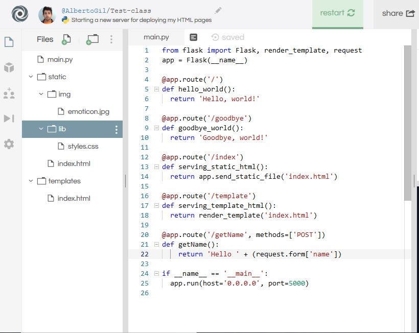

Serving pages using a web server: Flask
Reminder
If you have doubts about HTML, CSS, JS and/or the client-server architecture, please review the previous lesson
At this point you should be able to create HTML pages, stylize them using CSS and run code in the browser with JavaScript. Clients send requests to the servers, the servers processes the requests and send responses to the clients, that display them. The web servers usually respond by sending HTML, CSS and Javascript. The response is then handled by the browser, that runs the JavaScript code, displays the HTML and uses the CSS to style the HTML. If you are loose when you read this paragraph, run to the previous lesson and review it!
Remember also the python programming learnt in the previous lessons. It will provide us with the basic knowledge to know what the Flask web server is doing. The source runs strong with a consolidated knowledge :)
In this lesson we will use repl.it, since it allows us to host a server in their hosting service, so we will be able to deploy our web pages using their hosting!
Serving HTML content. The source awakens
Take a look in the code from repl.it. Open it in a full screen, clicking in the top right corner (open in repl.it) button or navigating to https://repl.it/@AlbertoGil/flask-test. Check out the different files there:
- main.py: Server-side code where the server runs its code
- static: folder where the html pages to be served from the web server are allocated. It contains the lib folder where the .css and .js files are stored. They are sent to the client as well.
- templates: similar to the previous folder, but it contains templates instead of static pages. Templates are usually used as a base
to create HTML web pages. When we return the output of the template (using the function
render_template, we send the corresponding file, but all the variables under curly braces{{variable}}are checked. If we give information about this variable in the request, it gets replaced by its value.
The served content can be accesed clicking the  button or navigating to
https://flask-test.albertogil.repl.co.
button or navigating to
https://flask-test.albertogil.repl.co.
Now navigate to the /goodbye on the end. What do you see? How do you think python generates what you see?
How to serve HTML content
There are different functions to serve content using Flask:
- Flask(__name__)
Flask functions
@app.route('{route}'): tt returns to the client whatever it is in the function defined under this directive.app.send_static_file('{static_file_name}'): it sends the specified file as it is to the client. The client figures out what to do with it. It does not compile/render any file referenced by the HTML.render_template('{template_name}'): it sends the specified template to the client. Before sending it, it checks all the pairs between curly braces{{variable}}and it compiles the HTML page and its references. If there is some information about the variables between the curly braces previously mentioned, it replace them with the value provided. If there are links to other files, it rendes a template with all the information needed. It is mandatory to import the library render_template in the first line of our python flask file.
from flask import Flask, render_template
Creating our first formulary
-
Creating the form:: FORM label .
Insert a form html object in your html page. This is one example where the formulary is sending an attribute name of type text.
<form action="/getName" method="post"> Enter your name: <input type="text" name="name">
<input type="submit" value="Submit"> </form>The form label especifies an action (the route where it will the data collected in the different objects within the form label). This route should handle the data sent. In this example, the data obtained is the text introduced by the user in the field name and it send the data in a post request that is handled by the route "getName".
-
Methods to send form data:
-
GET: through URL variables.
- Appends form-data into the URL in name/value pairs.
- The length of a URL is limited (about 3000 characters).
- Never use GET to send sensitive data! (will be visible in the URL).
- Useful for form submissions where a user want to bookmark the result.
- GET is better for non-secure data, like query strings in Google.
-
POST: HTTP post transaction
- Appends form-data inside the body of the HTTP request (data is not shown is in URL).
- Has no size limitations.
- Form submissions with POST cannot be bookmarked.
-
GET: through URL variables.
-
Accessing form data from Flask:
The request library from flask provides distinct methods to read the data contained in a request. The request.form contains the key/value pairs in the body, from a HTML post form, or JavaScript request that isn't JSON encoded. The next code shows how to read a variable of a form:
(request.form['<ATTRIBUTE_NAME_THAT_I_WANT_TO_USE<'])The next image shows an example of a route that receives the data formulary and returns it as text in the response. 
Assignments
We want to deploy the amazing HTML web page that we created the previous week. No one wants to miss it :)
- Making our fake news worlwide accesible!
- Create your own web application server copying the files from the repl.it provided and check that it works and it is accesible in the domain assigned by repl.it to your repl.it
- Create different routes that returns different content. Y
- Insert content into the HTML pages so instead of write the routes in the navigation bar of the browser, we can click into the links provided in your HTML page. HINT: Use <a> tags and its corresponding attributes.
- Deploy a template using variables to return with different calls. The template should be called from two different routes named
atletiandrayo. Does it display different content in the browser? - EXTRA. You can make any change to the repl.it apps modifying the .py, .css, .js or .html files! You will see if there is any error when the code is automatically deployed. As long as the website runs, all plays are allowed.
- EXTRA. You can create a formulary to handle user data in your web server. Once you have seen an example of a formulary that collects a text input from the user in the attribute name, it sends it to the app server in the route getName and it returns a "hello <TEXT_CONTAINED_IN_NAME_ATTRIBUTE>", you can create more complex formularies. Use the source, Luke!